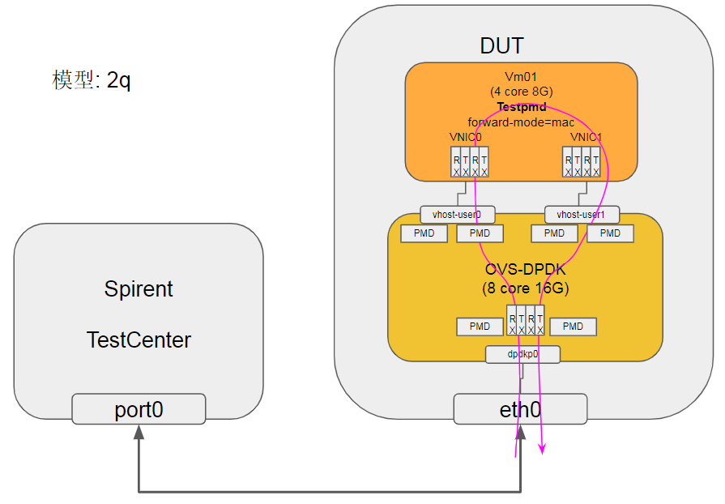

1. 环境
| 服务器 | DUT(HXT server) | Note |
|---|---|---|
| Socket | 1 | 单socket |
| CPU | 46core@2.6G AW2.1 | sudo dmidecode -t processor |
| MEM | 96G | free -h |
| NIC | MLX CX4121A 10G 0004:01:00.0 enP4p1s0f0 | ibdev2netdev -v |
| OS | CentOS 7.5.1804 | CentOS 7.5.1804 cat /etc/redhat-release |
| kernel | 4.14.62-5.hxt.aarch64 | uname -r |
| Mellanox OFED version | 4.4-1.0.0.0 | ofed_info -s |
| QEMU version | 2.12.1 | qemu-system-aarch64 --version 源码编译 |
| DPDK version | 17.11.4 | 源码编译 |
| OVS(with DPDK) version | 2.10.1(with dpdk 17.11.4) | sudo ovs-vsctl show 源码编译 |
| libvirt version | 4.6.0 | 源码编译 |
| virt-manager version | 1.5.1 | 源码安装 |
2. 测试场景

3. 配置
预置条件: DPDK, OVS, Qemu, libvirt, virt-manager已经成功编译安装
3.1. OVS配置
| OVS选项 | 值 | 说明 |
|---|---|---|
| dpdk-init | true | |
| bridge | ovsbr0 | |
| pmd-cpu-mask | FF00000000 | 8个core 32 33 34 35 36 37 38 39 |
| dpdk-socket-mem | 16384 | 单socket 16G |
| vhost-user port 0 | dpdkvhostuser0 | |
| vhost-user port 1 | dpdkvhostuser1 | |
| dpdk port0 | dpdkp0 | MLX CX4 10G NIC |
#增加32G的hugepage
sudo bash -c "echo 64 > /sys/kernel/mm/hugepages/hugepages-524288kB/nr_hugepages"
#开始ovs
export PATH=$PATH:/usr/local/share/openvswitch/scripts
sudo ovs-ctl start
#打开硬件offload, 2.10才有; 2.9.3没效果
#miniflow_extract, dpcls_lookup等函数被offload了
sudo ovs-vsctl --no-wait set Open_vSwitch . other_config:hw-offload=true
#多条流会有用? :提高~15%
sudo ovs-vsctl --no-wait set Open_vSwitch . other_config:smc-enable=true
#打开dpdk初始化
sudo ovs-vsctl --no-wait set Open_vSwitch . other_config:dpdk-init=true
#新增一个bridge, 使用用户态datapath模式
sudo ovs-vsctl add-br ovsbr0 -- set bridge ovsbr0 datapath_type=netdev
#配置pmd跑在8个核上, core 32 33 34 35 36 37 38 39
sudo ovs-vsctl set Open_vSwitch . other_config:pmd-cpu-mask=FF00000000
#配置使用node0的16G内存.
sudo ovs-vsctl --no-wait set Open_vSwitch . other_config:dpdk-socket-mem="16384"
#增加物理port, 对应物理NIC
sudo ovs-vsctl add-port ovsbr0 dpdkp0 -- set Interface dpdkp0 type=dpdk options:dpdk-devargs=0004:01:00.0
#增加两个port, 类型是dpdkvhostuserclient
sudo ovs-vsctl add-port ovsbr0 dpdkvhostuser0 -- set Interface dpdkvhostuser0 type=dpdkvhostuserclient
sudo ovs-vsctl set Interface dpdkvhostuser0 options:vhost-server-path="/tmp/dpdkvhostuser0"
sudo ovs-vsctl add-port ovsbr0 dpdkvhostuser1 -- set Interface dpdkvhostuser1 type=dpdkvhostuserclient
sudo ovs-vsctl set Interface dpdkvhostuser1 options:vhost-server-path="/tmp/dpdkvhostuser1"
#以下为可选配置
#配置多queue, 绑定pmd core
sudo ovs-vsctl set Interface dpdkvhostuser0 options:n_rxq=2 other_config:pmd-rxq-affinity="0:34,1:35"
sudo ovs-vsctl set Interface dpdkvhostuser1 options:n_rxq=2 other_config:pmd-rxq-affinity="0:36,1:37"
#设置物理port使用2个q
sudo ovs-vsctl set Interface dpdkp0 options:n_rxq=2 other_config:pmd-rxq-affinity="0:32,1:33"
3.2. VM配置
预置条件: libvirtd已经成功启动 先用virt-manager创建2个VM, 配置如下: VM | VM01 | VM02 ---|---|---| CPUs | 4 | 4 Memory | 8192M | 8192M Disk | hxt-centos7.5-01.qcow2 32G | hxt-centos7.5-02.qcow2 32G NIC(for external Net) | virtio NAT | virtio NAT NIC(for test) | vhostuser0 | vhostuser0 NIC(for test) | vhostuser1 | vhostuser1
#启动libvirtd服务
sudo systemctl start libvirtd
#启动virt-manager
sudo xauth add $(xauth -f /home/bai/.Xauthority list | tail -1)
sudo virt-manager -c 'qemu+unix:///system?socket=/usr/local/var/run/libvirt/libvirt-sock'
#启动一个VM, 这个VM配置如上
sudo virsh create ~/repo/save/vm/2vhostuser.xml
4. 4q测试
# 4个q
## OVS默认一个core一条流, dpdkp0上几个core决定几条流(或者几个q真正干活)
sudo ovs-vsctl set Interface dpdkp0 options:n_rxq=4 other_config:pmd-rxq-affinity="0:32,1:33,2:34,3:35"
## dpdkvhostuser0实际空跑, 绑定核和dpdkp0一样
sudo ovs-vsctl set Interface dpdkvhostuser0 options:n_rxq=4 other_config:pmd-rxq-affinity="0:32,1:33,2:34,3:35"
## 瓶颈在dpdkvhostuser1, 绑定4个独立的core
sudo ovs-vsctl set Interface dpdkvhostuser1 options:n_rxq=4 other_config:pmd-rxq-affinity="0:36,1:37,2:38,3:39"
# VM
## 要用3个core, 1个core最大转发6.9Mpps; 但3个core, 有一个core是"空闲"的
sudo arm64-armv8a-linuxapp-gcc/app/testpmd --socket-mem 1024 -- --stat 2 --nb-cores=3 --rxq=4 --txq=4 --rxd=512 --txd=512 --burst=64 --port-topology=paired --forward-mode=mac -a